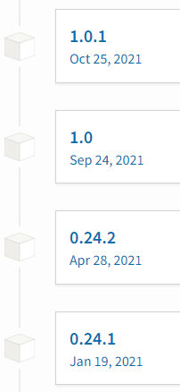
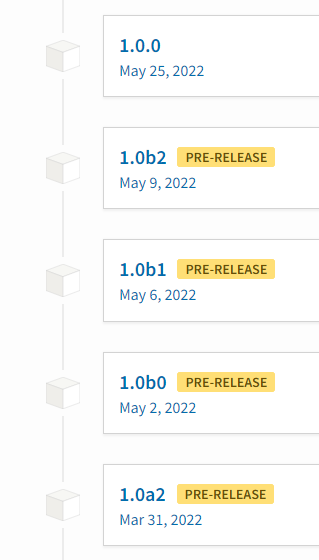

flowchart LR
A(Input A) --> F["Black box"]
B(Input B) --> F
F --> O(Output)
style F fill:#000,color:#fff,stroke:#333,stroke-width:4px
Distributing your Python package
Packaging
Packaging means creating a package that can be installed by pip.
There are many ways to create an installable package, and many ways to distribute it.
We will show how to create a package using hatchling, and how to distribute it on GitHub, PyPI and a private PyPI server.
Benefits of packaging
- Distribute your package to others
- Install your package with
pip - Specify dependencies
- Reproducibility
- Specify version
- Release vs. development versions
Packaging workflow
- Create a
pyproject.tomlin the root folder of the project - Build a package (e.g.
myproject-0.1.0-py3-none-any.whl) - Upload the package to location, where others can find it
pyproject.toml
[build-system]
requires = ["hatchling"]
build-backend = "hatchling.build"
[project]
name = "my_library"
version = "0.0.1"
dependencies = [
"numpy"
]
authors = [
{ name="First Last", email="initials@dhigroup.com" },
]
description = "Useful library"
readme = "README.md"
requires-python = ">=3.7"
classifiers = [
"Programming Language :: Python :: 3",
"License :: OSI Approved :: MIT License",
"Development Status :: 2 - Pre-Alpha",
"Operating System :: OS Independent",
"Topic :: Scientific/Engineering",
]
[project.optional-dependencies]
dev = ["pytest","flake8","black","sphinx", "myst-parser","sphinx-book-theme"]
test= ["pytest"]
[project.urls]
"Homepage" = "https://github.com/DHI/my_library"
"Bug Tracker" = "https://github.com/DHI/my_library/issues"Versioning
Versioning your package is important for reproducibility and to avoid breaking changes.
Semantic versioning use three numbers {major}.{minor}.{patch}, e.g. 1.1.0
- A new major version indicates breaking changes
- A new minor version indicates new features, without breaking changes
- A new patch version indicates a small change, e.g. a bug fix
- Each of the numbers can be higher than 9, e.g.
1.0.0is more recent than0.24.12

Version 1.0
- A version number of
1.0indicates that the package is ready for production - The API is stable, and breaking changes will only be introduced in new major versions
- The package is well tested, and the documentation is complete
- Start with version
0.1.0and increase the version number as you add features
Breaking changes
What is a breaking change?
- Removing a function
- Changing the name of a function
- Changing the signature of a function (arguments, types, return value)
Try to avoid breaking changes, if possible, but if you do, increase the major version number!
Installing specific versions
pip install my_librarywill install the latest versionpip install my_library==1.0.0will install version 1.0.0pip install my_library>=1.0.0will install version 1.0.0 or higher
Pre-release versions
- Versions that are not ready for production
- Indicated by a suffix, e.g.
1.0.0rc1 - Will not be installed by default
- Can be installed with
pip install my_library==1.0.0rc1 - Listed on PyPI, but not on the search page

License
- A license is a legal agreement between you and others who use your package
- If you do not specify a license, others cannot use your package legally
- The license is specified in the
pyproject.tomlfile - Read more about licenses on https://choosealicense.com/
- Check if your package is compatible with the license of the dependencies
Dependencies
Application
A program that is run by a user
- command line tool
- script
- web application
Pin versions to ensure reproducibility, e.g. numpy==1.11.0
Library
A program that is used by another program
- Python package
- Low level library (C, Fortran, Rust, …)
Make the requirements as loose as possible, e.g. numpy>=1.11.0
pyproject.toml
[build-system]
requires = ["hatchling"]
build-backend = "hatchling.build"
[project]
name = "my_library"
version = "0.0.1"
dependencies = [
"numpy"
]
authors = [
{ name="First Last", email="initials@dhigroup.com" },
]
description = "Useful library"
readme = "README.md"
requires-python = ">=3.7"
classifiers = [
"Programming Language :: Python :: 3",
"License :: OSI Approved :: MIT License",
"Development Status :: 2 - Pre-Alpha",
"Operating System :: OS Independent",
"Topic :: Scientific/Engineering",
]
[project.optional-dependencies]
dev = ["pytest","flake8","black","sphinx", "myst-parser","sphinx-book-theme"]
test= ["pytest"]
[project.urls]
"Homepage" = "https://github.com/DHI/my_library"
"Bug Tracker" = "https://github.com/DHI/my_library/issues"Classifiers
classifiers = [
"Programming Language :: Python :: 3",
"License :: OSI Approved :: MIT License",
"Development Status :: 2 - Pre-Alpha",
"Operating System :: OS Independent",
"Topic :: Scientific/Engineering",
]- Classifiers are used to categorize your package
- Less relevant for internal packages
- Operating system (Windows, Linux, MacOS)
- Development status (Alpha, Beta, Production/Stable)
Packaging non-Python files
- Including non-Python files can be useful for e.g. machine learning models.
- If you use
hatchling, you can include non-Python files in your package. hatchlinguses .gitignore to determine which files to include.
GitHub secrets
- Store sensitive information, e.g. passwords, in your repository.
- Secrets are encrypted, and only visible to you and GitHub Actions.
- Add secrets in the repository settings.
To use secrets as environment variables in GitHub Actions, add them to the env section of the workflow:
GitHub Actions
.github/workflows/python-package.yml
name: Publish Python Package
on:
release:
types: [created]
jobs:
deploy:
runs-on: ubuntu-latest
steps:
- uses: actions/checkout@v2
- name: Set up Python
uses: actions/setup-python@v2
with:
python-version: '3.10'
- name: Install dependencies
run: |
python -m pip install --upgrade pip
pip install build
- name: Build package
run: python -m build
- name: Publish to PyPI
env:
TWINE_USERNAME: ${{ secrets.PYPI_USERNAME }}
TWINE_PASSWORD: ${{ secrets.PYPI_PASSWORD }}
run: |
twine upload dist/* Private PyPI server
- Private packages can be be hosted on e.g. Azure Arfifacts or Posit Package Manager.
- These servers behaves like PyPI, and can be used with
pip - Access policies can be used to control who can install packages.
Installing a development version
- Install latest dev version, e.g.
pip install https://github.com/DHI/mikeio/archive/main.zip - Install from
fix-interpbranch, e.g.pip install https://github.com/DHI/mikeio/archive/fix-interp.zip
Recap
Git, Pull Requests, and code reviews
Github flow

- Create a branch
- Make changes
- Create a pull request
- Review
- Merge
Github best practices
- Commit often
- Use descriptive commit messages
- Keep pull requests small and focused
- Use “issues” to track work
- Review code regularly
Python functions, classes, and modules
Functions as black boxes
- A function is a black box that takes some input and produces some output.
- The input and output can be anything, including other functions.
- As long as the input and output are the same, the function body can be modified.
Naming conventions - general
- Use lowercase characters
- Separate words with underscores
Constants
- Use all uppercase characters
Classes
- Use CamelCase for the name of the class
- Use lowercase characters for the name of the methods
- Separate words with underscores
Dataclasses
import datetime
from dataclasses import dataclass
@dataclass
class Interval:
start: date
end: date
>>> dr1 = Interval(start=datetime.date(2020, 1, 1), end=datetime.date(2020, 1, 31))
>>> dr1
Interval(start=datetime.date(2020, 1, 1), end=datetime.date(2020, 1, 31))
>>> dr2 = Interval(start=datetime.date(2020, 1, 1), end=datetime.date(2020, 1, 31))
>>> dr1 == dr2
TrueTypes, abstraction, and refactoring
Pythonic
If you want your code to be Pythonic, you have to be familiar with these types and their methods.
Dundermethods:
__getitem____setitem____len____contains__- …
Duck typing
- “If it walks like a duck and quacks like a duck, it’s a duck”
- From the perspective of the caller, it doesn’t matter if it is a rubber duck or a real duck.
- The type of the object is not important, as long as it has the right methods.
An example is a Scikit learn transformers
fittransformfit_transform
If you want to make a transformer compatible with sklearn, you have to implement these methods.
Testing and auto-formatting
Unit testing
Definition “Unit”
- A small, fundamental piece of code.
- Executed in isolation with appropriate inputs.
- A function is typically considered a “unit”
- Lines of code within functions are smaller (can’t be isolated)
- Classes are considered bigger (but can be treated as units)
A good unit test
- Fully automated
- Has full control over all the pieces running (“fake” external dependencies)
- Can be run in any order
- Runs in memory (no DB or file access, for example)
- Consistently returns the same result (no random numbers)
- Runs fast
- Tests a single logical concept in the system
- Readable
- Maintainable
- Trustworthy
Thank you!
Python package development